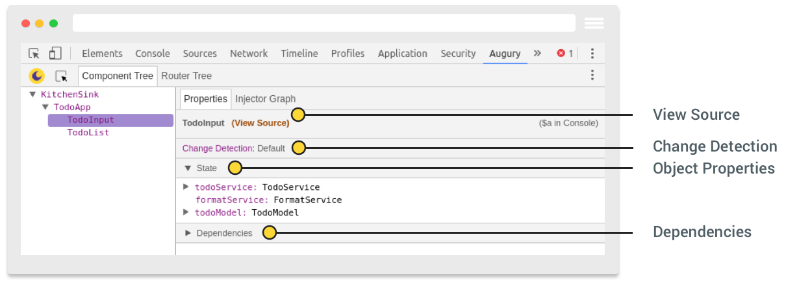

欢迎使用Augury
In this section you will learn about what Augury is and the features that are available. Later lessons in this guide will go into more detail, with each lesson that will have an accompanying demo Angular application.
在这个章节您将了解什么事Augury及其功能。本向导中的其余章节将介绍更详细的细节。并且每一个章节都有一个完成的Angular应用案例。
Augury is an application inspection tool for Angular that runs in the Web browser. It runs as a Chrome browser extension for the Developer Tools (DevTools) panel, aiding in analysis and debugging during development.
Augury 是一个浏览器上的Angular审查工具。它是Chrome浏览器的一个开发者工具区的一个拓展面板，主要是在开发中帮助分析和调试错误的。
Augury provides insight into the application structure for an Angular application and the relationship between these building blocks:
Augury 能敏锐的分析Angular应用的结构和各组成部分之间的关系，比如：
译者注：以下词汇后期翻译中会尽量使用英文单词。
- Components 组件
- Services 服务
- Routes 路由
- Modules 模块
- Dependencies 依赖
- Injectors 注入器
- Data bindings 数据绑定
- Events 事件
- Object properties 对象属性
在debug的时候，Augury是开发者工具的一个补充，它使开发者工具更加容易更改Angular项目中的状态和事件。
Augury compliments DevTools during a debugging session, making it easy to modify state and emit events.
Installing Augury安装Augury
The best way to install Augury is from the chrome web store. Select Extensions from the side panel, type “Augury” into the search field, and then press Enter.
安装Augury最好的方式是从Chrome商店中获取。选择“拓展程序”按钮，在搜索栏中输入“Augury”，回车即可。

这个检索结果会列出由 Rangle.io 提供的Augury拓展
The search result should list the Augury extension by Rangle.io:

然后点击”添加至CHROME”,此时会弹出一个弹出框.选择”添加拓展程序”,这样就完成了安装.插件安装成功之后,一个Augury的图标会出现在浏览器地址栏上(浏览器右上角)
When you click on “Add To Chrome”, a popup will open. Select “Add extension” to complete the process. Once the plugin has been successfully installed, an Augury icon will appear next to the address bar in the browser.
这个Augury图标提供了拓展信息,点击图标可以了解更多.
The Augury icon provides additional information. Click on the icon now to discover what that is.
Using Augury 使用Augury
在开始使用Augury之前,您必须在浏览器上运行着一个用于分析的Angular应用.如果您没有调试过JavaScript应用,您需要了解,现代浏览器都会直接提供有一个调试环境–开发者工具,这个调试环境可以用以下热键启动.
To start using Augury, you must have an Angular application running in the browser for inspection. If you have never debugged a JavaScript application, you may not be aware that each modern Web browser provides a debug environment straight in the browser. DevTools, the debug environment is opened using the following shortcut:
- 对于Windows和Linux,使用
Ctrl + Shift + I 对于Mac系统，使用
Cmd + Opt + IFor Windows and Linux, use
Ctrl + Shift + I- For Mac OS X, use
Cmd + Opt + I
当开发者工具打开的时候，你会发现Augury的标签页在最右侧
When DevTools is opened, you will find the Augury tab on the far right.

Augury features Augury特性
我们来快速浏览下Augury提供的主要功能。主要是为了熟悉特性，并且在需要的时候可以找到它们。
We will quickly go over the main functionality that is available in Augury. This is to become familiar with the features and how to locate them when needed.
第一个视图时 Component Tree ，它展示了应用中载入的component。
The first view that is visible is the Component Tree which shows loaded components belonging to the application.
这个组件树展现了 components 的层次关系。当选中一个 components 时，Augury会在属性的页签中显示有关的选中的 component 的信息。
The component tree displays a hierarchical relationship of the components. When a component is selected, Augury presents additional information about the selected component in the Properties tab.

值得注意的点如下：
- View Source – component的源码链接
- Change Detection – 变化检查是否使用的开关
- Object Properties – component的属性列表
- Dependencies – component的依赖列表
Notable items of interest are:
- View Source — a link to the source code of the component.
- Change Detection — displays whether or not Change Detection is in use for the component.
- Object Properties — lists the properties of the component.
- Dependencies - lists the dependencies of the component.
点击’View Source’您可以看见选择的 component 的源码。这样就会将焦点移到源码标签页并且显示源码。
To view the source code of the selected component, click the ‘View Source’ link. This will bring the Sources tab into focus and display the source code.
Source map 资源图
有一点需要记住，只用当存在 source map 文件时， TypeScript 代码才能显示。在产物中，如果在编译生成的JavaScript代码中没有 source map ，这将是个“雷区”并且难以阅读。
One thing to keep in mind, the TypeScript code will only be shown if a source map file exists. In production, if no source map is found, what you will see is the compiled JavaScript code, which may also be minified and difficult to read.
Properties 标签页之后是 Injector Graph ，点击它会出现 components 和 services 的依赖。
Next to the Properties tab is the Injector Graph, clicking on it will display the dependency of components and services.
在后续章节我们会详细介绍 Injector Graph
We will learn more about how to interpret the Injector Graph in later lessons.
Augury最后一个重要的特性是 Router Tree ，它会展示应用的路由信息。 Router Tree 标签页在 Component Tree 的下一个。
The final major feature of Augury is the Router Tree, which displays the routing information for the application. The Router Tree tab is located next to the Component Tree tab along the top left side.

有一些东西我们目前并未涉及，比如数据绑定、事件等，在后续章节我们将说明。当然，现在您对Augury有了一个基本了解并且知道怎么去发现Angular应用的特性。
There are a few things we didn’t cover here such as data binding and events which will be covered in other lessons. However, you now have a basic understanding of Augury and how to start exploring its features with an Angular application.
Augury在上线之后也在不断改进变化提高，并且它会继续不断提高。我们衷心的希望您喜欢Augury并且让他成为您不可或缺的工具。我们欢迎所有反馈，快来加入我们 Slack channel （译者注：这是一个团队交流工具,译者ID：Free Ming）
Augury has evolved and improved over time since its debut, and it will continue to improve. We hope you will come to love Augury and make it an indispensable tool in your toolbox. We love and welcome all feedback, come join us on our Slack channel.